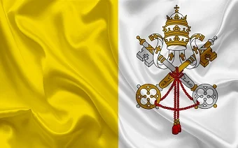

Breve resumo
Milagres eucarísticos são fenômenos extraordinarios reconhecidos pela igreja Católica em que a hostia ou o vinho se tornam visivelmente em corpo ou sangue reais.
essa é uma pagina de aprendizado ✝✝

Milagres eucarísticos são fenômenos extraordinarios reconhecidos pela igreja Católica em que a hostia ou o vinho se tornam visivelmente em corpo ou sangue reais.
Oração de são Bento
Crux sacra sit mihi lux,Non draco sit mihi dux.Vade retro, Satana!Nunquam suade mihi vana!Sunt mala quae libas;Ipse venena bibas.